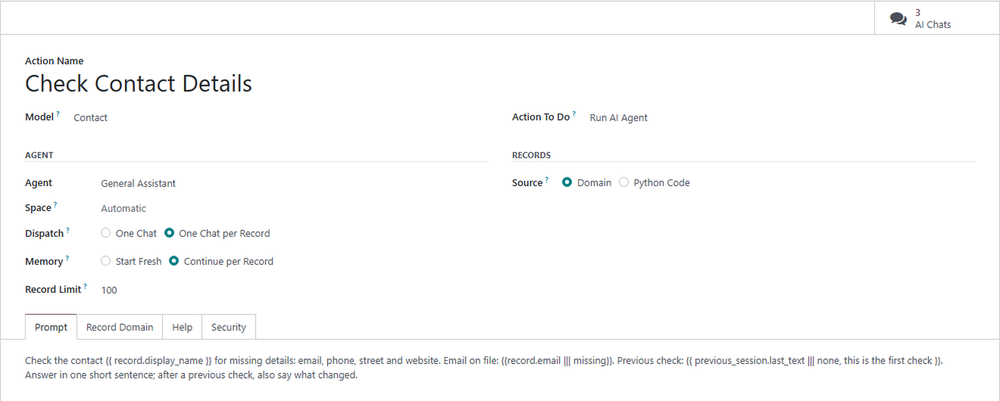
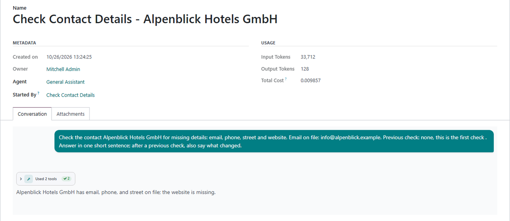
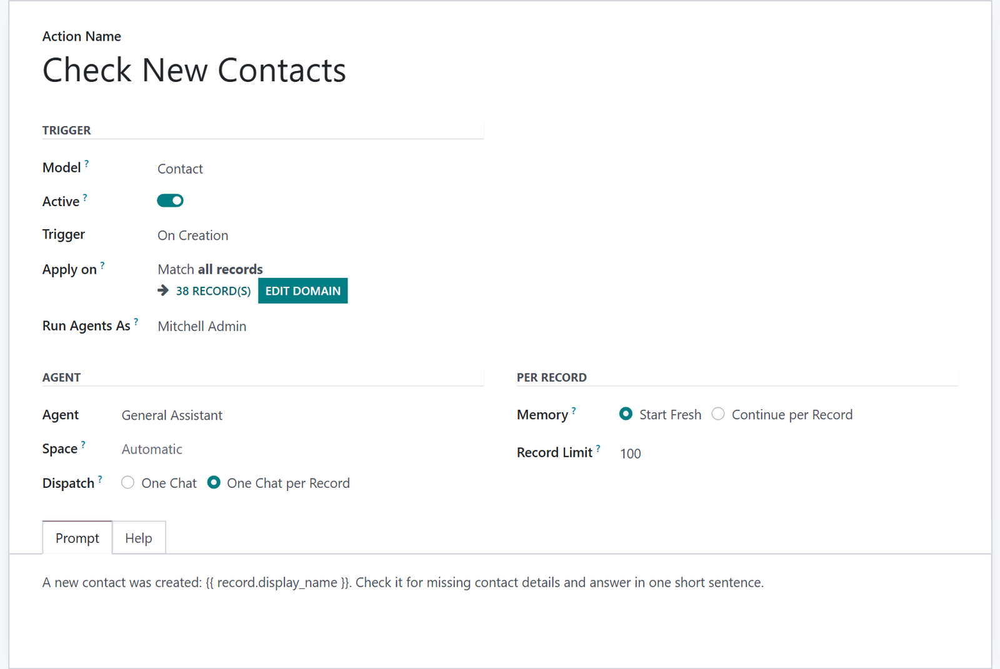
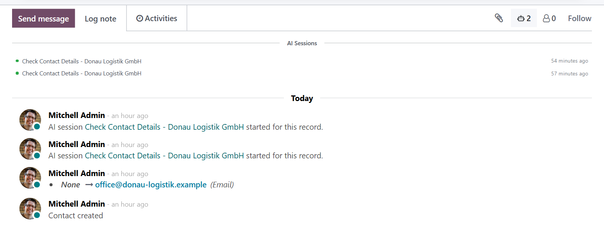

Run AI Agent is a server action of its own. An automation rule, a schedule or the Actions menu of a list hands it records, and it starts an AI chat with your prompt for all of them, or one for each.
Automation rules, scheduled actions and the Actions menu of a list all start the same action.
Each record gets a chat of its own, linked to it and listed in its chatter, or all of them share one.
Every chat runs as the user who runs the action, the user of its schedule, or the user set on its rule, with that user’s access rights and nothing more.

Pick the model and the agent, decide how the records are split into chats, and write the prompt. The trigger brings the records: those selected in a list, those of a rule, or those a schedule finds.
Double braces put in the record, the records of the run, the user, the company or today’s date, rendered for every chat.
A scheduled action takes its records from a domain built in the editor, or from Python code that is checked when you save.
Continue per Record hands each chat the last answer and the tool calls of the previous chat for the same record.
With one chat per record, a run starts no more chats than its record limit allows, however many records it gets.
The AI Chats button of an action lists every chat it started, with its state, its cost and its answer.
An action whose user is archived refuses to run, and a prompt that does not render fails its chat with the reason.
A run starts real AI chats, named after the action and the record. Open one to read the prompt it was sent, the tools the agent called and the answer it gave.
The chats work in the background, so a run returns at once and tells you how many it started. They are listed under the action, and in the sessions report with every other chat.


Add a Run AI Agent action to an automation rule, and the rule hands the agent the records that set it off. A scheduled action runs the agent at an interval on the records of its domain, and Run Manually tries it at once.
Create Contextual Action puts an agent action in the Actions menu of a list, for the records you select.
With one chat per record, every chat belongs to its record. A note in the chatter links to it, and the AI Sessions button lists every run for that record, the moment it starts.
A chat has the access rights of the user it runs as, never of the superuser. When that user is archived, the action stops rather than run as someone else.

What you get for free, and what has to be paid work.
Issues and merge requests are welcome on the public repository. They are read — but no response time is promised.
An agent action built for your process, or a fix on a deadline, is paid work — quoted up front. Write to sale@mukit.at.
LGPL-3. Use it, change it, ship it inside your own work — no licence key, no database count.
Modules written for your process, on your Odoo version.
Odoo joined up with the systems you already run.
Hosting, deployment and upgrades you do not have to watch.
Your team taught the parts of Odoo they actually use.
An agreement, so an answer does not depend on who is free.
Odoo.sh or on-premise, Community or Enterprise, with MuK AI Assistant and an AI provider set up. The chats run on the MuK AI session workers, so the server runs its cron workers.
Install MuK AI Automation from the Apps menu. Agent actions, automation rules and scheduled actions that run an agent are under MuK AI › Automation.
Depends on base_automation and muk_ai_chatter. Install it like any other module; it needs no extra Python packages.
Create an agent action with its agent and prompt, add it to the Actions menu of a list and run it on the records you select, or use an agent in a rule or a schedule. Read the answers under AI Chats.
Agent actions, rules, schedules and past chats are records, and an upgrade keeps them.
MuK IT GmbH, Vienna. Author and maintainer.
Tell us the checks your team does by hand, and we will tell you which agent action takes them over. MuK IT — Austrian Odoo partner, Vienna.